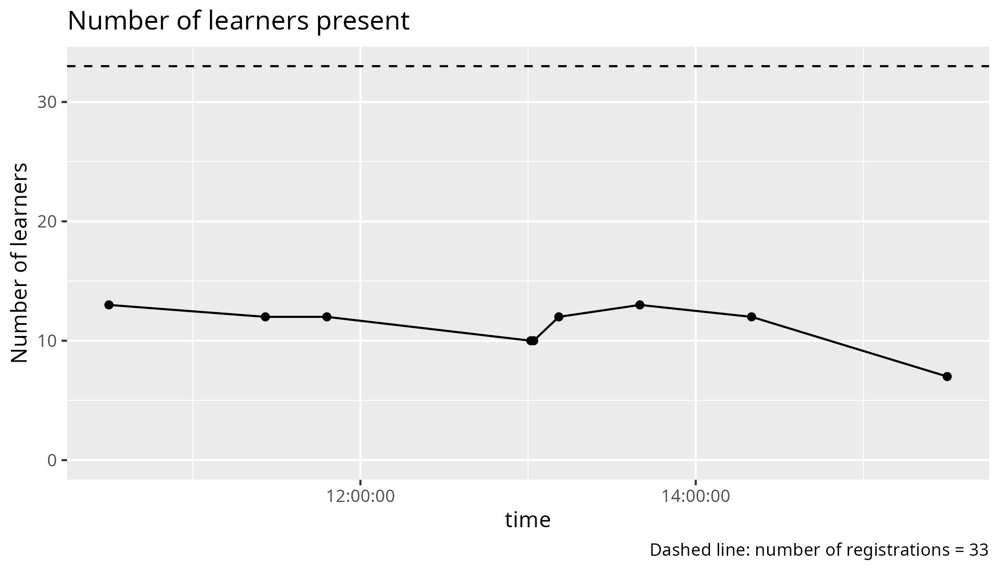

Reflection¶
- Author: Richel
- Date: 2025-03-24
- Language: R
- Lesson plans
- Evaluation
- Registrations: 33
- Participants: 12 (36% of registrations shows up)
With the 1 hour optional login session, we give 1 hour of teaching to the unprepared, while sacrificing 1 hour of teaching for the prepared. I think we should reward the prepared, by not having this drop-in.
However, at the drop-in, 9 showed up, of which 5 were put in a breakout room with me. There, I discovered how useful it is. There were 2 out of 5 that could not have logged in without this session. Also, it is a great first impression of our students.
+-------+------------------------------+--------------+
| Time | Topic | Teacher(s) |
+=======+==============================+==============+
| 9:00 | (optional) First login | BB + PO + RB |
+-------+------------------------------+--------------+
| 9:45 | Break | . |
+-------+------------------------------+--------------+
| 10:00 | Introduction | RB |
+-------+------------------------------+--------------+
| 10:10 | Syllabus | RB |
+-------+------------------------------+--------------+
| 10:20 | Load modules and run | RB |
+-------+------------------------------+--------------+
| 10:45 | Break | . |
+-------+------------------------------+--------------+
| 11:00 | Packages | BB |
+-------+------------------------------+--------------+
| 11:30 | Isolated environments | BB |
+-------+------------------------------+--------------+
| 12:00 | Lunch | . |
+-------+------------------------------+--------------+
| 13:00 | Batch | BB |
+-------+------------------------------+--------------+
| 13:30 | Parallel | PO |
+-------+------------------------------+--------------+
| 14:15 | Break | . |
+-------+------------------------------+--------------+
| 14:30 | Simultaneous session | . |
+-------+------------------------------+--------------+
| . | HPC2N: ThinLinc, RStudio | PO |
+-------+------------------------------+--------------+
| . | LUNARC: On-Demand, RStudio | RP |
+-------+------------------------------+--------------+
| . | UPPMAX: Interactive, RStudio | RB |
+-------+------------------------------+--------------+
| 15:15 | Break | . |
+-------+------------------------------+--------------+
| 15:30 | Machine learning | PO |
+-------+------------------------------+--------------+
| 16:00 | Summary and evaluation | RB |
+-------+------------------------------+--------------+
| 16:15 | Done | . |
+-------+------------------------------+--------------+

I overestimated the number or learners leaving: from my data is estimated 25% of all learners to leave. Instead, before and after the break there were around 12 learners.

Recording has a clear effect on the number of learners with camera on/off.
Online instruction in higher education: Promising, research-based, and evidence-based practices
From:
Boettcher, Judith V., and Rita-Marie Conrad. The Online Teaching Survival Guide : Simple and Practical Pedagogical Tips, John Wiley & Sons,
Table 3.1:
- Be present at the course site
- Create a supportive online course community
- Develop a set of explicit expectations for your learners and yourself as to how you will communicate and how much time students should be working on the course each week
- Use a variety of large group, small group, and individual work experiences
- Use synchronous and asynchronous activities
- Ask for informal feedback early in the term
- Prepare discussion posts that invite responses, questions, discussions, and reflections
- Think digital and mobile for all course content
- Combine core concept learning with customized and personalized learning
- Plan a good closing and wrap activity for the course
- Assess as you go by gathering evidences of learning
- Rigorously connect content to core concepts and learning outcomes
- Develop and use a content frame for your course
- Design experiences to help learners make progress on their novice-to-expert journey.
From:
Nilson, Linda B., and Ludwika A. Goodson. Online teaching at its best: Merging instructional design with teaching and learning research. John Wiley & Sons, 2021.
I quote:
- Students learn new material better and can remember it longer when they learn it by engaging in an activity than when they passively watch or listen to an instructor talk [8 references]
- […] long lectures and presentations will fail because students stop viewing and listening after about six minutes. This phenomenon parallels McKeachie’s earlier classroom findings about inattention after five to ten minutes [reference]. In online classes, such student inattention becomes explicitly visible through electronic monitoring of activities and questions from students about what has already been covered in a long presentation.
Reasons why learners do not turn on their camera, is
Tobi, Bernadette, et al. “A case study on students’ reasons for not switching on their cameras during online class sessions.” Learning 6.41 (2021): 216-224
with results (number of learners = 50):
| Reason | Percentage |
|---|---|
| Fear of insufficient internet data | 54% |
| Poor internet connection | 50% |
| Physical condition of students’ background/location | 46% |
| Physical appearance on camera (not looking good) | 46% |
| Uncomfortable to be looked at all the time | 42% |
Or, from
Alim, Syahrul, Sirirat Petsangsri, and John Morris. “Does an activated video camera and class involvement affect academic achievement? An investigation of distance learning students.” Education and Information Technologies 28.5 (2023): 5875-5892.
the following reasons for not turning on the camera:
| Reason | Percentage |
|---|---|
| Unready to learn | 44% |
| Unstable internet connection and limited quota | 37% |
| psychological reasons | 11% |
| devices overheating | 4% |
| following others | 4% |
‘Unready to learn’ means, I quote: ‘the environment did not support camera activation, they had not taken a bath, were sick, wanted to sleep, were still doing something else, were fatigued or needed to go to the toilet.’.
The course is an introduction course. I feel the start-up parts are given too little time, for the things that I do not consider being beginner topics. I feel beginner things need their time, over sacrificing it for more sexy topics.
Remove, in order of my preference:
- Machine learning
- Parallel
- Isolated
I will suggest this in a meeting:
- [x] Suggest to remove ‘Machine learning’
- [x] Suggest to remove ‘Parallel’
- [x] Suggest to remove ‘Isolated environments’
My favorite schedule
+-------+------------------------------+--------------+
| Time | Topic | Teacher(s) |
+=======+==============================+==============+
| 9:00 | (optional) First login | BB + PO + RB |
+-------+------------------------------+--------------+
| 9:45 | Break | . |
+-------+------------------------------+--------------+
| 10:00 | Introduction | RB |
+-------+------------------------------+--------------+
| 10:10 | Syllabus | RB |
+-------+------------------------------+--------------+
| 10:20 | Load modules and run | RB |
+-------+------------------------------+--------------+
| 11:00 | Break | . |
+-------+------------------------------+--------------+
| 11:15 | Packages | BB |
+-------+------------------------------+--------------+
| 12:00 | Lunch | . |
+-------+------------------------------+--------------+
| 13:00 | Batch | BB |
+-------+------------------------------+--------------+
| 14:00 | Break | . |
+-------+------------------------------+--------------+
| 14:15 | Simultaneous session | . |
+-------+------------------------------+--------------+
| . | HPC2N: ThinLinc, RStudio | PO |
+-------+------------------------------+--------------+
| . | LUNARC: On-Demand, RStudio | RP |
+-------+------------------------------+--------------+
| . | UPPMAX: Interactive, RStudio | RB |
+-------+------------------------------+--------------+
| 15:00 | Break | . |
+-------+------------------------------+--------------+
| 15:15 | To be decided by vote | ? |
+-------+------------------------------+--------------+
| 15:45 | Summary and evaluation | RB |
+-------+------------------------------+--------------+
| 16:00 | Done | . |
+-------+------------------------------+--------------+
I felt rushed during my session, with only 45 minutes. The learners did reach the learning outcomes in time, but I had no time to discuss this with them. Sure, one could argue that the LOs have been achieved, yet, on the other hand, there was no proper Feedback phase.
I was a helper during the other sessions. I was not a very good helper: I find it hard to stay focused during monologues.
Evaluations¶
Q1: Course satisfaction: 8.25¶
Useless information to me.
Q2: Pace of teaching¶
Useless information to me.
Q3¶

My grades (average is 77):
| learning_outcome | success_score | Comment |
|---|---|---|
| I can find the module to be able to run R | 94 | Mine, great |
| I can load the module to be able to run R | 94 | Mine, great |
| I can run the R interpreter | 94 | Mine, great |
| I can run the R command to get the list of installed R packages | 88 | Mine, great |
| I can run an R script from the command-line | 88 | Mine, great |
| I can find out if an R package is already installed | 81 | Mine, was extra |
| I can load the pre-installed R packages | 88 | Mine, great |
| I can install an R package from CRAN | 81 | Not mine |
| I can use renv to create, activate, use and deactivate a virtual environment | 62 | Not mine |
| I can submit a job to the scheduler to run an R script with regular code | 78 | Not mine |
| I can submit a job to the scheduler to run an R script that uses parallel code | 69 | Not mine |
| I can submit a job to the scheduler to run an R script that uses a GPU | 56 | Not mine |
| I can find and load the R machine learning modules | 50 | Not mine |
| I can submit a job to the scheduler to run an R script that uses machine learning | 50 | Not mine |
| I can start an interactive session | 81 | Simultaneous session |
| I can verify I am on the login node yes/no | 78 | Mine, not taught explicitly |
| I can start an interactive session with multiple cores | 78 | Mine, not taught explicitly |
| I can start RStudio | 84 | Simultaneous session |

My worst sessions were those that were optional and/or in the simultaneous sessions. I find it hard to convince myself to take a second look at my material, as the learning outcomes are achieved too well.
Q4: would recommend¶
Useless to me.
Q5: suggestions for future topics¶
- More on parallelizing in R
Even more?
- It would be nice to perhaps have a little module on transferring files to and from the server: while I feel pretty confident about using R, I’m not completelt sure how to get files to and from he server.
Maybe link to the NAISS file transfer course
- [x] Link to the NAISS file transfer course in the course material
- And secondly, I’m 99% sure it should be reasonably straightforward, but it might be nice for there to be a little extra note on best practices for installing and using STAN for Markov Chain Monte Carlo (MCMC). R, Julia and MATLAB can work with STAN, and because MCMC is such a slow process, I can imagine that this could be helpful.
This feels quite niche to me.
Q6: other feedback¶
- For some portions of this course it was a bit unclear when/what to do hands-on.
Agree: it was unclear to me too sometimes. I am unsure if this applies to my session.
- The course documentation is very good and will help me the most in the future.
Nice.
- I really liked the materials and the web page. It was extremely helpful, and I have bookmarked the course page because it is easier to use than all the official documentation.
Nice.
- The exercises were well-prepared,
Nice
- … although the parallel processing section was less good on both the web page, and the exercise code needed a bit of editing to get it to work.
Not my session
The organization was great
Well done course coordinator!
- however the initial email maybe didn’t make it quite clear enough that setting up a login account could take many days. I happened to already have one, but sitting the day before to try to set up, I could easily have missed that.
Consider:
- [x] Suggest to make even clearer that getting an account takes days
- I really appreciate the amount of hands-on demonstrations: they were great.
Unsure if this applies to me.
- Only a very, very small comment is that it was not always clear which .sh file was appropriate for the relevant exercises, for instance serial and parallel at the start. The exercises might be named with the same names, which would make it easier to find them. But this is such a small complaint.
Does not apply to me. This seems like an easy fix.
- The whole material for the day was excellent, and I’m feeling extremely confident about moving forward with getting started.
Nice.
- I had some issues with my account not being set up correctly, which set me behind for the whole course and meant there were some things I couldn’t test myself as they were being explained. This was not the fault of the course facilitators, but did make the course less useful for me.
Agree.
- I liked the exercises best, makes it easy to understand how you can directly apply. I would have appreciated more time for them though.
I agree. The same feedback as always :-)
- The length of the course is good,
Nice.
- the machine learning part was difficult for me to follow.
I agree. Not my session.
To do¶
- [x] Suggest to remove ‘Machine learning’
- [x] Suggest to remove ‘Parallel’
- [x] Suggest to remove ‘Isolated environments’
- [x] Suggest my favorite schedule
+-------+------------------------------+--------------+
| Time | Topic | Teacher(s) |
+=======+==============================+==============+
| 9:00 | (optional) First login | BB + PO + RB |
+-------+------------------------------+--------------+
| 9:45 | Break | . |
+-------+------------------------------+--------------+
| 10:00 | Introduction | RB |
+-------+------------------------------+--------------+
| 10:10 | Syllabus | RB |
+-------+------------------------------+--------------+
| 10:20 | Load modules and run | RB |
+-------+------------------------------+--------------+
| 11:00 | Break | . |
+-------+------------------------------+--------------+
| 11:15 | Packages | BB |
+-------+------------------------------+--------------+
| 12:00 | Lunch | . |
+-------+------------------------------+--------------+
| 13:00 | Batch | BB |
+-------+------------------------------+--------------+
| 14:00 | Break | . |
+-------+------------------------------+--------------+
| 14:15 | Simultaneous session | . |
+-------+------------------------------+--------------+
| . | HPC2N: ThinLinc, RStudio | PO |
+-------+------------------------------+--------------+
| . | LUNARC: On-Demand, RStudio | RP |
+-------+------------------------------+--------------+
| . | UPPMAX: Interactive, RStudio | RB |
+-------+------------------------------+--------------+
| 15:00 | Break | . |
+-------+------------------------------+--------------+
| 15:15 | To be decided by vote | ? |
+-------+------------------------------+--------------+
| 15:45 | Summary and evaluation | RB |
+-------+------------------------------+--------------+
| 16:00 | Done | . |
+-------+------------------------------+--------------+
- [x] Link to the NAISS file transfer course in the course material
- [x] Suggest to make even clearer that getting an account takes days